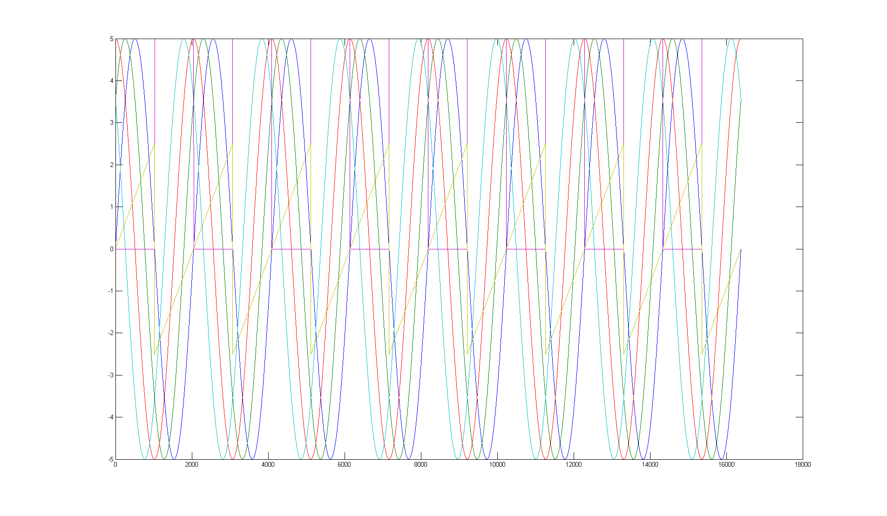
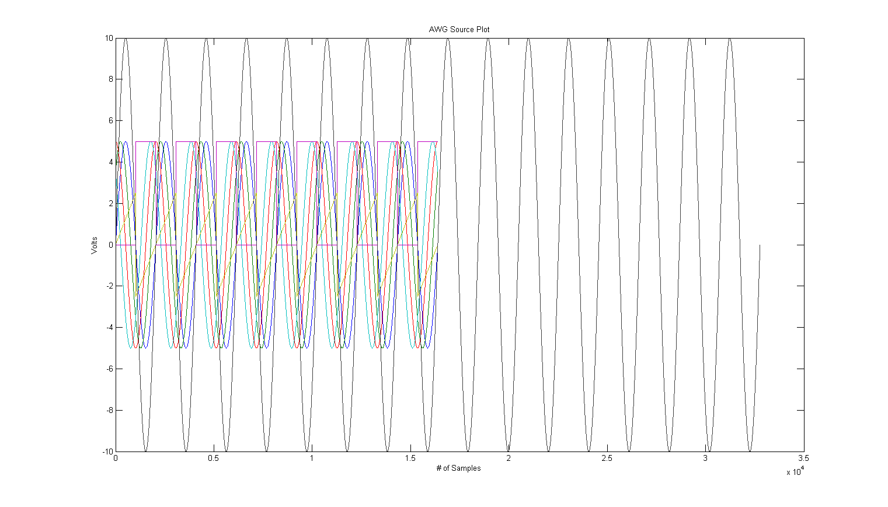

initialise_demo.m
Script that shows how to prepare some test signal sources for AWG.
For those unfamilliar with MATLAB some example code is provided to save/load signals, scale signals to volts and generate some basic plots.
Contents
How to define UUT
global UUT % Without DNS UUT = '10.12.196.103'; % IP address of YOUR product, this is just an example. % With DNS UUT = 'acq1001_025';
Create some sine, square and sawtooth waves for demo.
Saved to .mat files in ZIP file for convenience.
t = 1:16384; x1 = 32768*sin(2*pi*(1/(16384/8))*t); x2 = 32768*sin(2*pi*((1/(16384/8))*t)+pi/4); x3 = 32768*sin(2*pi*((1/(16384/8))*t)+pi/2); x4 = 32768*sin(2*pi*((1/(16384/8))*t)+3*pi/4); saw=2*16384*( (t/(16384/8)) - floor( 0.5+(t/(16384/8)) )); sq(1:1024)=0; sq(1025:2048)=1; sq=horzcat(sq,sq); sq=horzcat(sq,sq); sq=horzcat(sq,sq); sq=sq.*32768;
Transpose arrays (format D-TACQ cards prefer)
x1=x1'; x2=x2'; x3=x3'; x4=x4'; saw=saw'; sq=sq';
How to save/load your signals to file for easy retrieval in MATLAB
%SAVE save('sin1.mat','-ascii','x1') save('sin2.mat','-ascii','x2'); save('sin3.mat','-ascii','x3'); save('sin4.mat','-ascii','x4'); save('sq.mat','-ascii','sq'); save('half_saw.mat','-ascii','saw'); %LOAD x1 = load('sin1.mat','-ascii','x1'); x2 = load('sin2.mat','-ascii','x2'); x3 = load('sin3.mat','-ascii','x3'); x4 = load('sin4.mat','-ascii','x4'); sq = load('sq.mat','-ascii','sq'); saw = load('half_saw.mat','-ascii','saw');
Scale to Volts (FOR LOCAL PLOTS ONLY, SEND RAW CODES TO UUT)
vsf = 10/2^16; % Voltage Scaling Factor
x1_volts = x1.*vsf;
x2_volts = x2.*vsf;
x3_volts = x3.*vsf;
x4_volts = x4.*vsf;
sq_volts = sq.*vsf;
saw_volts = saw.*vsf;
Plot multiple signals on one graph
To do this in one command, all signals must be the same length and an index variable to plot against must be created.
index = 1:(length(x1)); fig1 = figure(1); plot(index,x1_volts,index,x2_volts,index,x3_volts,index,x4_volts,index,sq_volts,index,saw_volts); set(fig1,'units','normalized','outerposition',[0 0 1 1]); % MATLABs best approximation shg % Show graph, brings figure window to fore
To do this over several commands, with signals of different lengths and amplitudes you can use the "hold all" command. This will plot successive plot commands onto the same figure.
x_big = 2.*x1_volts; x_big = vertcat(x_big, x_big);
sig_array = {x1_volts, x2_volts, x3_volts, x4_volts, sq_volts, saw_volts, x_big};
fig2 = figure(2);
hold all
for i=1:7
plot(sig_array{i})
end
% These 3 lines resize the figure to a more suitable size
scrn = get(0,'ScreenSize');
pos1 = [0.1*scrn(3),0.1*scrn(4),0.8*scrn(3),0.8*scrn(4)];
set(fig2,'OuterPosition',pos1);
title('AWG Source Plot')
xlabel('# of Samples')
ylabel('Volts')
box on % Completes axes on North and East sides
shg
%close all % Closes all figure windows
%hold off % Turns off HOLD
